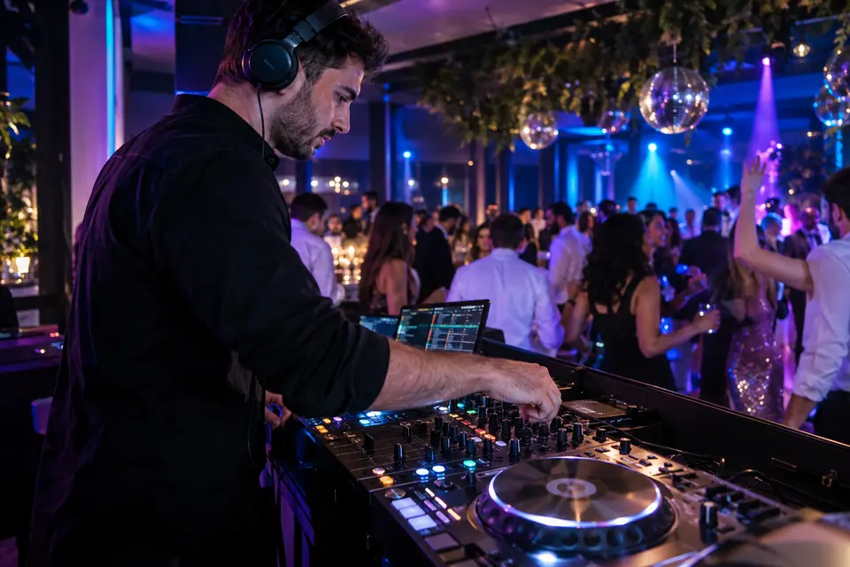
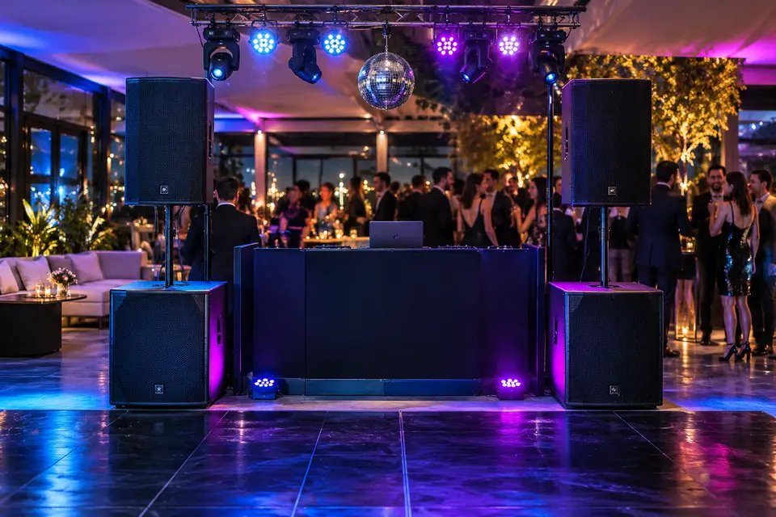
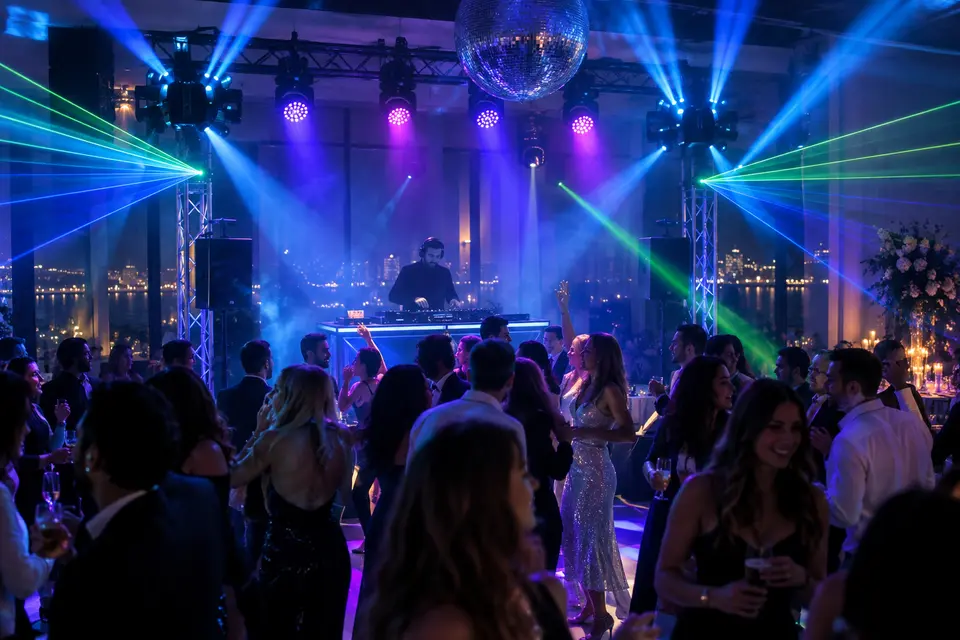
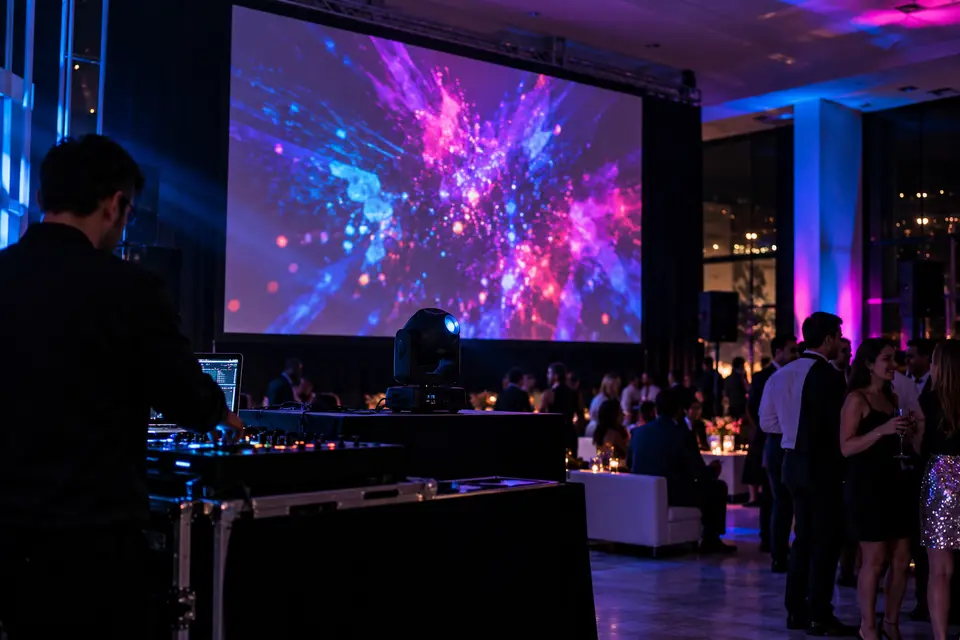
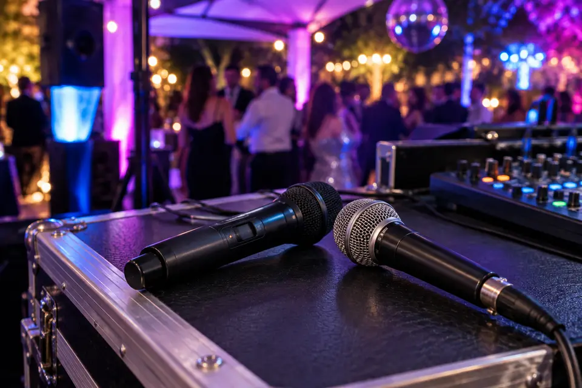
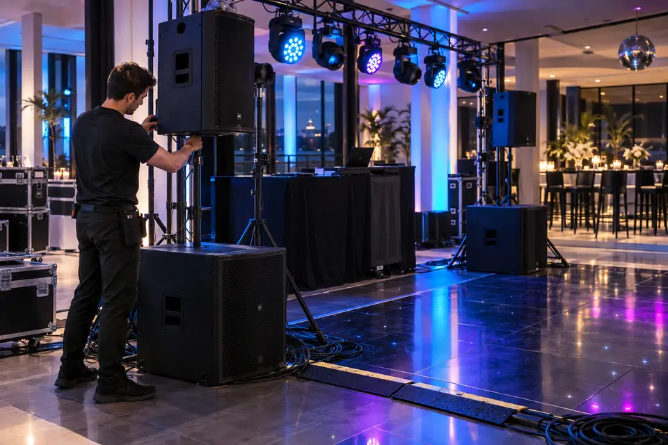

DJ personalizado
Coordinación previa, estilos y canciones elegidas, y música para cada momento de la noche.
MAC Discotec Producciones · DJ + discoteca + producción de eventos.
Pedí una propuesta →MAC planifica la música y los momentos importantes de cada celebración. Adapta el sonido, la iluminación y el montaje al espacio, los invitados y el estilo de la fiesta. Podés elegir el servicio de DJ o consultar por una producción más completa.
Estos son los servicios que presenta en su web. La configuración concreta se acuerda según la fecha, el lugar y las necesidades técnicas.

Coordinación previa, estilos y canciones elegidas, y música para cada momento de la noche.

Equipo dimensionado para el salón y la cantidad de invitados.

Luces de pista, robótica y efectos para acompañar la música.

Proyección Full HD para imágenes y momentos especiales.

Opciones inalámbricas y cableadas para palabras, anuncios y conducción.

Armado previo, operación técnica durante el evento y desmontaje al finalizar.
La propuesta publicada por MAC incluye DJ, operador y técnico durante la fiesta; sistema de audio con dos subwoofers de 15 pulgadas; iluminación LED, robótica, UV y láser; máquina de humo; pantalla gigante Full HD 1920 × 1080; micrófonos; montaje, operación y desmontaje.
El armado se prevé aproximadamente dos horas antes del inicio.
Experiencia completa de discoteca, según su web. Consultá disponibilidad, duración, lugar y alcance final antes de contratar.
Ver detalle en MAC ↗La web presenta DJ Esencial, Fiesta Total y Premium como puntos de partida. También muestra fotografía y filmación, efectos, ambientación, gastronomía y otros extras para consultar según presupuesto.
MAC + Selfie Fiesta Live figura como combinación próxima, con precio aún por confirmar. Conocé Selfie Fiesta Live →
Indicá tipo de evento, fecha, lugar y cantidad de invitados. En la web de MAC podés preparar la consulta; también podés escribir directamente al WhatsApp de Sergio Valiente.
Zona de atención publicada: Montevideo. Extras y combinaciones sujetos a propuesta. No hay un descuento exclusivo de Revista Montevideo anunciado para este servicio.